For this weeks assignment we had to design and make something big, I decided to try my hand at making a table.
here's the design file on solidworks:
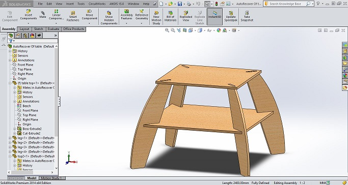and the dwg file for milling
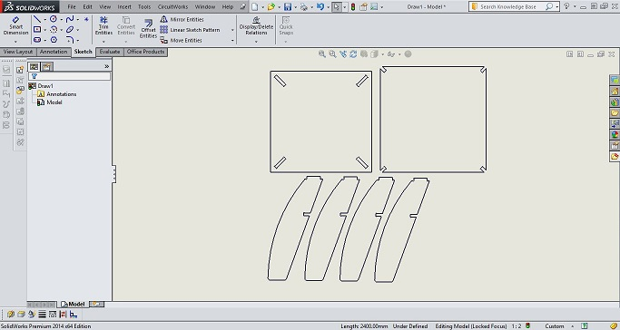I parametrcially bound the legs so they would be slaved to any changed in design to the two levels
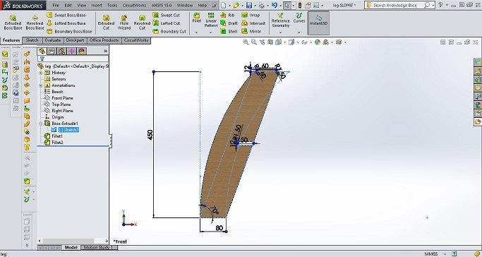Unfortunately I forgot to take photographs of the process of milling and separating the parts from the sheet , so here are the parts

and the final assembly
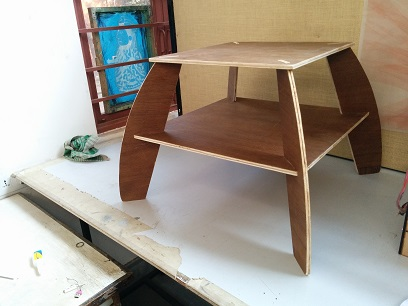
Since I couldn't get good enough documentation on the table I decided to document another project I've been working on, which is the manufacture of an airframe. Below, I've shown the model view of that the aircraft would look like once completed
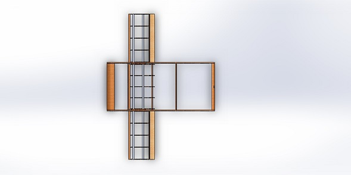 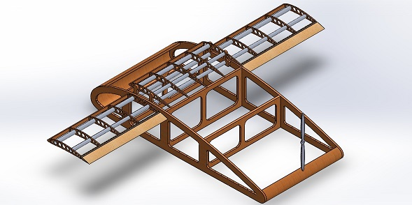the material I used for this purpose was extruded polystyrene, 30mm thick, which has a very nice consistency and cuts like butter. Here you can see the cut file I used:
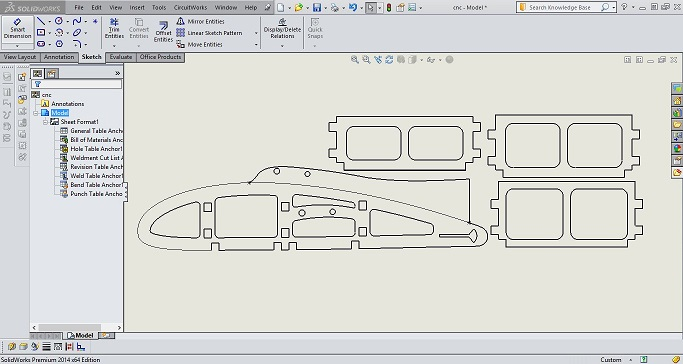The bit I selected initially (for higher accuracy) was a 1/8" 4 fluted, spiral endmill. this turned out to be a mistake as i later found out, because the cutting edge of the bit was only 12mm in length. Consequently, when the bit started cutting deeper than that, its shaft started rubbing against the XPS and melting it onto the bit untill the bit itself was no longer in contact with the material due to the coating of melted plastic on it
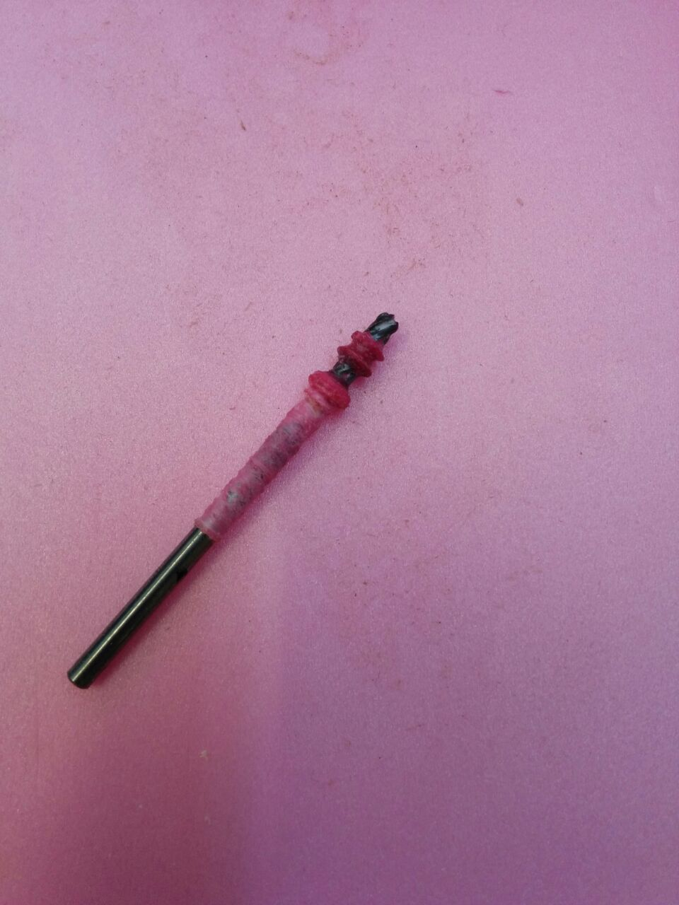to rectify this I selected a 1/4" 4 fluted, spiral endmill with a much longer cutting edge as shown below
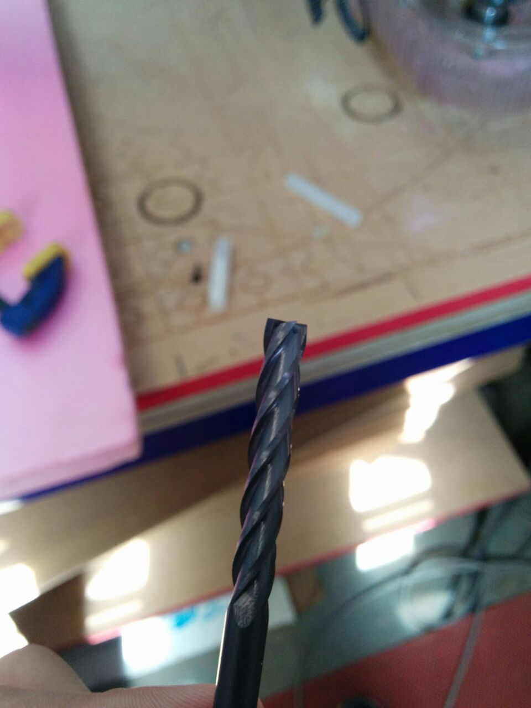after a few tests it became apparent that going slowly would lead to melted plastic and much grief, so I completed the cut at 6 in/s and in one pass (30mm depth) The material was anchored to the spoil board using industrial grade double sided tape

It is impotrant to note that when doing such cuts, it is imperative to leave tabs or else the parts can move around and get damaged. once I had the parts out, all that was left was assembly
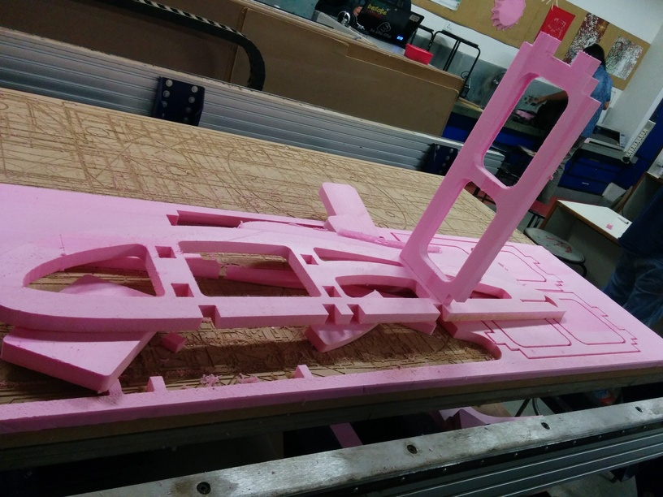 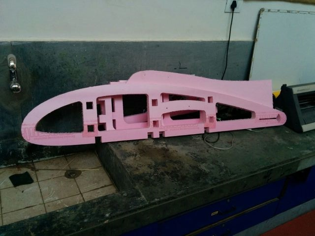 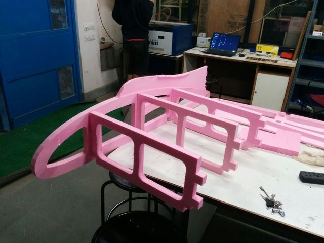 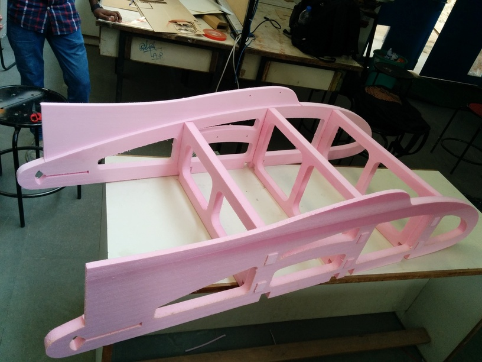 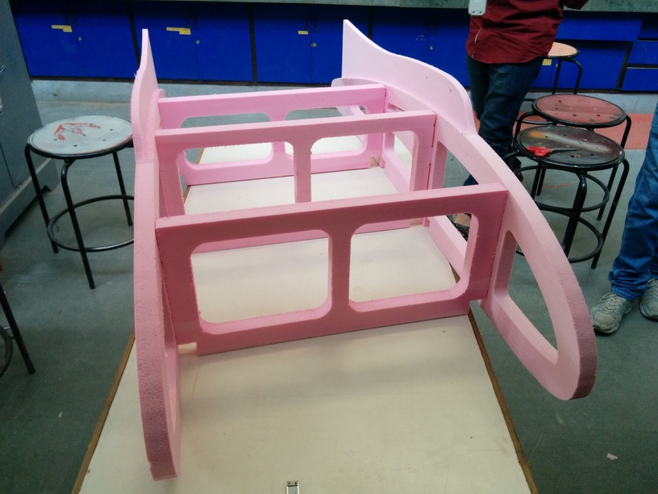at this stage I mainly wanted to test for structural integrity and rigiditym which it seemed to be lacking. to fix this, I added two sets of cross beams under the frame
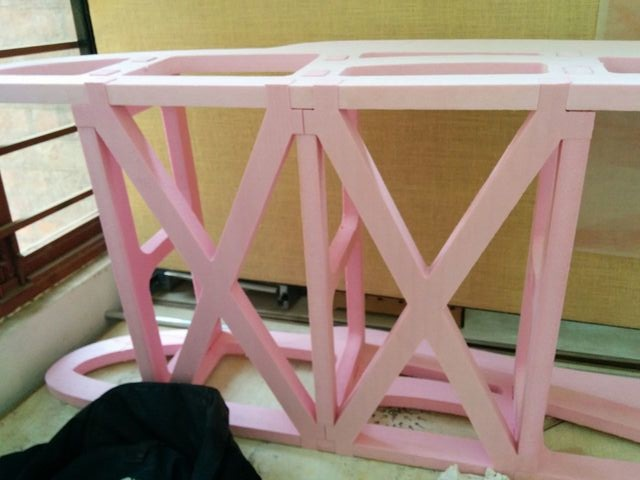This milling job also involved making a pocket cut, as the horizontal stabilizers could not be allowed to be 30mm thick
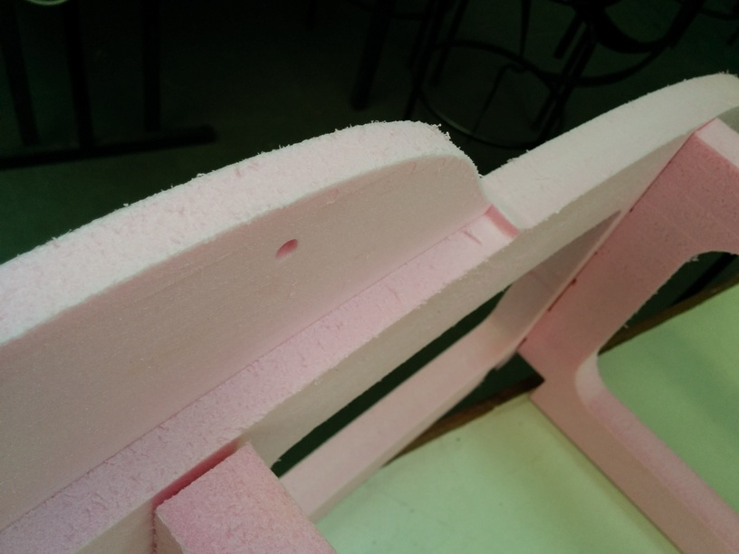The finish of the surface is actually remarkably good, considering I was moving at such high speeds